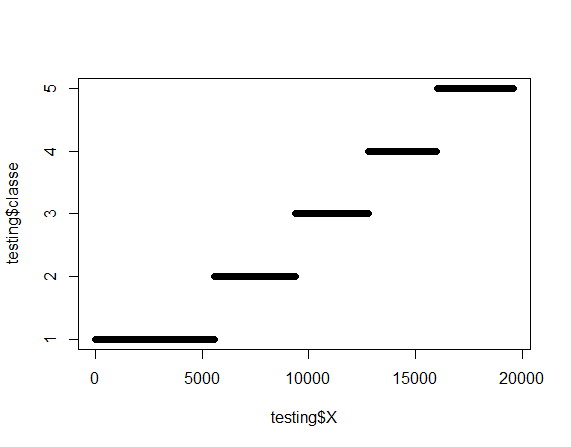

I chose to use the random forest classifier as this is a classification problem.
I used cross validation by dividing the training set into two sets: a training set (75% of the samples) and a testing set (25% of the samples). All the training is done with the training set. The testing set is used only once to get an estimation of the model's performance with the real test set (of the 20 samples).
Looking at the features themselves, most of them seemed to be relevant for the prediction. One feature, X, was the position of the sample in the pml-training data. Plotting it against the classe feature I got the following:

The conclusion is that X should not be part of the features used for training because it is not related to predicting classe. Since the samples are ordered in such a way that X seems to predict classe it might also harm the prediction model.
The data has 160 features. I wanted to check for correlation between the numeric features. I removed the factor features and the ones with NA values and was left with a data frame of 55 features.
Building the correlation matrix I found that there are quite a few pairs of features with very high correlation (above 0.9). For that reason I decide to do pre-processing on the data by doing principal component analysis. The goal was to find a smaller set of features that capture the information in the original features.
I got a new and smaller set of features (27 features).
Now I trained the data frame with the new features using the random forest method. Since it took a lot of time, I used the doParallel library and used the cores on my machine so that the training used 3 cores. The training took ~17 minutes.
This is the model I got:
Random Forest
14718 samples
26 predictor
5 classes: 'A', 'B', 'C', 'D', 'E'
No pre-processing
Resampling: Bootstrapped (25 reps)
Summary of sample sizes: 14718, 14718, 14718, 14718, 14718, 14718, ...
Resampling results across tuning parameters:
mtry Accuracy Kappa Accuracy SD Kappa SD
2 0.9660186 0.9569982 0.003404959 0.004319098
14 0.9588981 0.9479887 0.003713374 0.004709117
27 0.9481556 0.9343977 0.004909058 0.006219914
I used the model to predict the testing partition of the training set.
The confusion matrix reported very good results:
Confusion Matrix and Statistics
Reference
Prediction A B C D E
A 1386 0 7 1 1
B 13 922 13 0 1
C 1 2 846 6 0
D 1 0 26 776 1
E 1 5 5 10 880
Overall Statistics
Accuracy : 0.9808
95% CI : (0.9766, 0.9845)
No Information Rate : 0.2859
P-Value [Acc > NIR] : < 2.2e-16
Kappa : 0.9758
Therefore my estimated out of sample error is ~ 2%.